ЗАНЯТИЕ 3.7. ПРИВЕДЕНИЕ УРАВНЕНИЙ КРИВЫХ ВТОРОГО ПОРЯДКА
К КАНОНИЧЕСКОМУ ВИДУ
Контрольные вопросы
- Что такое параллельный перенос системы координат? Приведите формулы связи "старых" и
"новых" координат.
- Приведите формулы связи "старых" и "новых" координат при повороте системы координат
без изменения её начала.
- Объясните методику приведения общего уравнения кривой второго порядка к каноническому
виду, используя последовательно поворот системы координат и параллельный перенос системы координат.
Какой результат достигается на каждом из этих этапов преобразования системы координат?
Задачи
- Выяснить геометрический смысл уравнений:
а)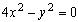 ,
б) 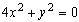 ,
в) 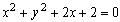 ,
г) 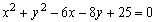 ,
д) 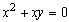 ,
е) 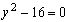 .
- Поворотом осей координат преобразовать уравнения к каноническому виду
и построить кривые:
а) 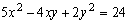 ,
б) 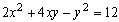 .
- Преобразовать уравнения к каноническому виду и сделать чертеж:
а) 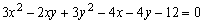 ,
б) 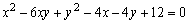 ,
в) 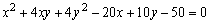 ,
г) 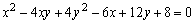 .
Ответы
- а) две прямые 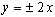 , б) точка (0; 0),
в) мнимая окружность,
г) точка (3; 4), д) две прямые х = 0, 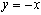 ,
е) две прямые 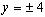 ;
- а) 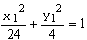 , б) 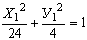 ;
- а)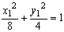 , б) 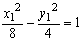 ,
в) 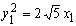 , г) две прямые 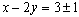 .